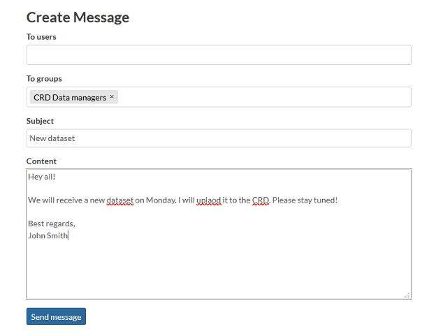

Community¶
Explore people¶
Find out who else is part of the Climate Risk Database community by exploring registered users.
Click Community
Registered Members from the header menu.
Explore people by searching them by their name, sorting the profiles or going through them page by page.
Click that member’s username whose profile you want to explore.
Contact users¶
You can view other members’ profiles to get to know them more, and even send them messages.
When you are in your own, or in someone else’s profile page, click Message User.
Select the user you want to message from the first list. You can select multiple users by holding CRTL from your keyboard and clicking the names, simultaneously.
Alternatively, if you want to reach all members of a group, select the group from the second list.
Give your message subject and write the message. When ready, click Send message.
You can view your conversations in your Inbox. Access it by clicking your username in the top-right corner and selecting Inbox.

Invite users¶
If you know someone who would love to be a member of the Climate Risk Database community, or they would have content to contribute with, you can invite them to be a member by sending an email invitation.
Invite external users to join Climate Risk Database by clicking Invite Users on your own profile page.
Write the emails you want to send the invitation to and separate them with semicolon (;).
Click Submit.
Note: If this feature is disabled on your profile page, this activity is not currently available for you.
Data owners¶
All layers uploaded to CRD have an owner, which is an organization that has been part of creating the data and/or owns it. You can explore all the owner organizations and access their profile page through layers that are owned by them. From the profile page, you can find description of the organization, as well as their contact information.
Explore data owners by clicking Community –> Data Owners from the header menu.
Click the name of an organization you want to explore more closely.
If you have questions regarding the datasets owned by the organization, you can click the email address linked to their profile page and send them a message.
Community groups¶
Climate Risk Database has different community groups for the community members, depending on their role in the Climate Risk Database. Most of the registered members are Data Users. They engage with the data by creating data stories and using the data in different cases. The group of Data Users may consist of smaller groups, for example students of a particular University. Therefore, they can execute activities, such as start conversations, in their own group. Some of the members are CRD Data Managers. They are data experts who validate and approve all layers that are uploaded to CRD. If you would like to join this group and be a Data Manager of the Climate Risk Database, send a message to the email address provided in the CRD Data Managers group description.
Explore community groups by clicking Community –> Community Groups from the header menu.
Click the header of the group you want to explore more detailed.
Read about the activities of the group from the description. Explore sub-groups of that group by scrolling down.